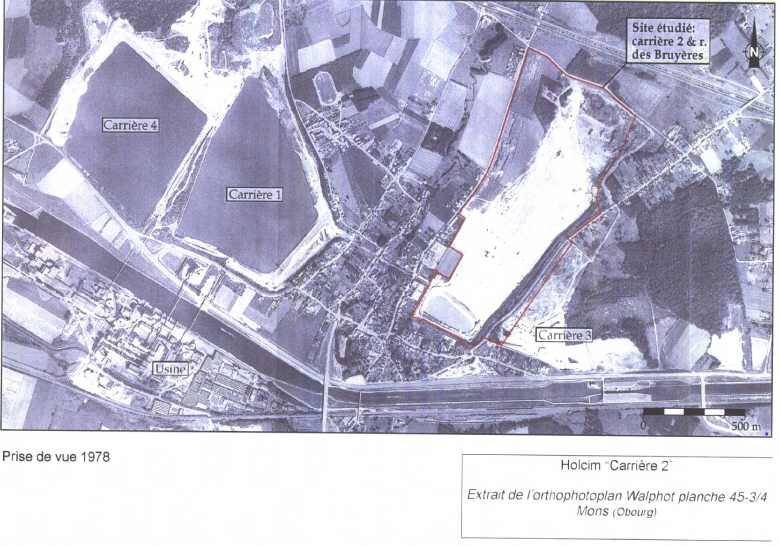
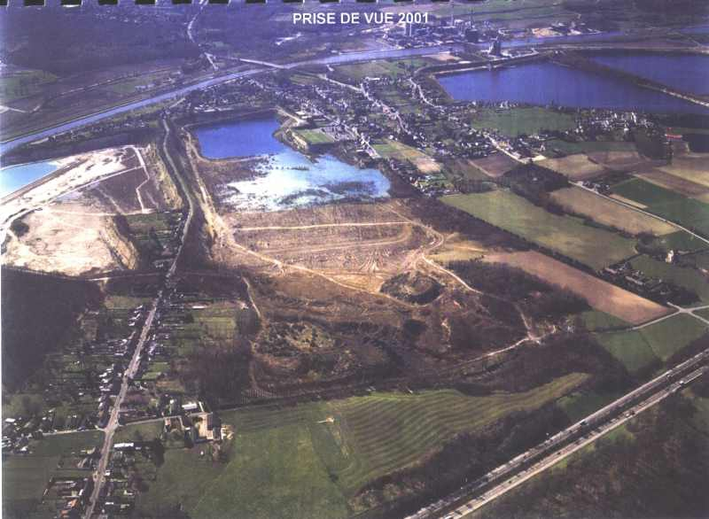
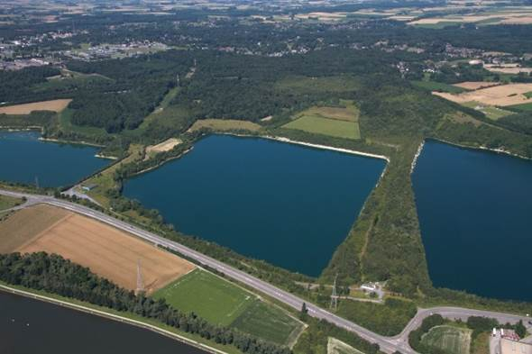

La Maison des Sciences de la Vie et de la Terre est née suite au réaménagement des carrières d’Obourg.
Un premier pôle a vu le jour en 2001 avec la construction du Jardin Géologique, complété en 2008 par la Maison des sciences de la Vie et de la Terre (anciennement Maison de la Biodiversité). Les 2 infrastructures s’alignant parfaitement sur le site pour illustrer le potentiel géologique et écologique régional.
En effet, le village d’Obourg situé à l’Est de Mons est assis sur un gisement exceptionnel de craie. Cette couche connue depuis l’époque est actuellement exploitée par les industries cimentières.
Depuis 1911, ce processus d’industrialisation est particulièrement développé et la société "Ciments d’Obourg" exploite le site. Au fil du temps, ce sont au total 5 carrières qui ont été creusées dont 1 est encore en activité actuellement. Les "Ciments d’Obourg" ont été renommés "Lafarge-Holcim" en 2016.
L’arrêt de certaines de ces carrières en 1970-1990 mena Holcim à une réflexion approfondie des perspectives de réhabilitation des sites d’exploitation « à ciel ouvert » et face aux potentialités biologiques et aux richesses fossilifères de ces espaces. Holcim se positionne finalement en faveur de la valorisation de ces richesses naturelles et de la création de la biodiversité. 
Parallèlement, l’exposition de 1993 « Nature et Ressources Naturelles dans le Bassin de Mons » fut inaugurée à «l’Espace Terre et Matériaux » de la Faculté Polytechnique de Mons. Cette exposition initiée par J-M Charlet, J-P Verhaegen et A. Dendal devient, en quelque sorte le point de départ de la Maison des Sciences de la Vie et de la Terre.
En effet, en 1996, ils déposèrent un projet de création de « centre d’initiation aux Sciences Naturelles et de la Terre » avec un rapport détaillant les intérêts géologiques et écologiques auprès d’Holcim. Cette initiative attira l’attention d'Holcim, alors occupés à réaménager ses carrières en un espace dédié à la conservation de la nature.
En 2000, la Province du Hainaut, la Société Royale des Naturalistes de Mons et du Borinage, la Faculté Polytechnique de Mons et la Société Holcim s’associent pour construire un concept pédagogique unique en Belgique basé sur l’évolution de la vie sur la terre conjointement aux grandes époques de la géologie.
Le projet est lancé en 2001 :
 Ces 2 pôles ont des activités complémentaires : écologie et géologie. Toutefois, en 2012, le Jardin Géologique est fermé, et les activités se concentrent sur La Maison des Sciences de la Vie et de La Terre.
En 2019, notre ASBL continue de réaliser des partenariats avec de nombreux naturalistes, notamment l'ASBL "Ardenne et Gaume" et le SPW avec l'objectif de maintenir et de réhabiliter la biodiversité sur le site. Pour se faire, de nombreuses actions de réaménagements, de gestions et de suivis sont opérés tout au long de l'année dans les carrières.
 Depuis 2020 et en collaboration avec le SPW, de nombreux aménagements ont été réalisés au sein des carrières. En effet, dans le cadre du projet BNIP LIFE, une trentaine de mares de tailles et de profondeurs variables ont été creusées. Ces nouvelles mares visent la restauration d'habitats notamment pour le triton crêté, le crapaud calamite et l'alyte accoucheur.
D'autres travaux ont également vu le jour avec notamment un dessouchage massif des buddleias en vue d'une réhabilitation des hirondelles de rivage, présentes il y a encore quelques années au sein de nos carrières.